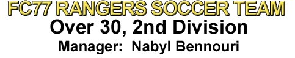
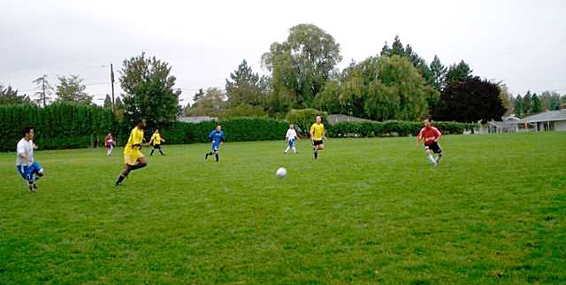
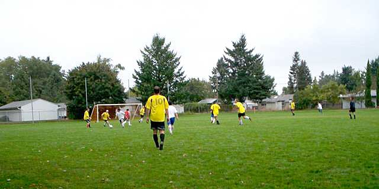

|
|
|
|
Historical Archive Rangers 3, Centennial 1 Over 30, 3rd
Division Champions! We'll let Manager
Sean Ingersoll tell the tale:
(Complete 2007 Fall Season Rundown, courtesy of manager Sean Ingersoll) RANGERS 4, FC BANFIELD 3 THIS IS HOW IT ALL ENDS On a cold, wet, dark afternoon that was miserable enough to keep all the would-be Junior Rangers and family back at home, the Yellow and Black clawed their way to a season finale victory against FC Banfield and finished with their best record in many years. The Montessori Earth School pitch was perhaps better suited for a monster truck rally—most of the striping was washed away and the field of play was barely defined by the corner flags and a pair of orange buckets that marked the center of the field, but despite the wretched November weather and the quickly approaching darkness, ‘Gers made their own luck and claimed their third victory of the season. Some might say that a 3-6-1 record isn’t that impressive. Those people would be ass-monkeys. [Kids, be sure to get your parent’s permission before reading the Ranger’s Match Summaries!] Ten points from a tough campaign is another step forward for a team that didn’t win any matches a year ago (OK, we did win one by forfeit, but…) and indicates steady improvement for the Over-30, Third Division team. As with all of our matches, it wasn’t easy. Seventeen players braved the elements and every single player contributed to the victory in another shortened match. Despite Ranger’s good early passing and control, Banfield’s Division 2 “ringer” player broke through the back line against the run of play and put the opposition up approximately ten minutes into the match. A response was forthcoming as both Malvern Ntini and James McConnachie had shots just miss the target in the following minutes. ‘Gers finally answered with a truly spectacular effort approximately eight minutes later when McConnachie and Ntini, working a series of quick passes to stymie Banfield’s trap, got the ball out to the far right corner. McConnachie arched a beautiful cross to the far post and Ron King answered with a thundering header into the upper corner to equalize. King’s first goal of the season proved to be a much-needed proverbial adrenaline shot to FC77’s heart and rallied the squad for a stellar fifteen minutes of football. Around the 25th minute, ‘Gers capitalized on a corner kick and Ntini slammed home the go-ahead goal after a brief scramble in the box. Matt Muralt, one of the central midfield workhorses all season long, put Rangers up 3-1 with an expertly timed run through Banfield’s fullbacks. Thinking they had caught him with offsides, the defenders stopped pursuit, only to have referee Ken Koopmans allow play to continue. Muralt noticed the keeper was way off his line and audaciously chipped him…from about 35-40 yards out. You could almost hear the incoming whistle as the bomb loped over his head and dropped into the net. Truly, it was an awesome strike. With approximately ninety seconds to play in the half, the Banfield ringer picked up his hat trick with a cutting run at the top of the box that allowed him to score far side and then, a minute later, with the finish on a Route One link-up at the whistle. Tied at 3-3 and with halftime reduced to about two minutes in order to maximize the length of the second half, Rangers dug in and fought their way to victory. The match turned chippy from the second half whistle. Aaron Radigan exchanged forearms with a Banfield player who took exception to his perfectly legal tackles. Brian Bauman violently upended more than one striker who tried to dribble through him and Mike Pullen and Jay Abramowitz also took on multiple attacks by going to ground, usually to the visitor’s chorus of “Referee!” Finally, around the hour mark, ‘Gers made that little bit of luck that the footballing gods had not given them all season long. Instead of playing our trademark long ball counter, the team worked a pair of beautiful near side midfield links. The first, from Ron Burden to Matt Muralt, back to Burden and then to King, just needed a clean finish to score. The second series (the exact sequence escapes me), skittered the ball across the goal mouth and McConnachie did what he has done so often this season…he found the net. His team-high seventh strike was coolly slotted past the keeper as the defense failed to cover his run. The sideline roared with approval. The last fifteen minutes, as play literally faded to black, became outright hostile—harsh tackles from behind, shoves in the box on set plays, a kick to the head and eventually a yellow card for Banfield. Rangers gave as good as they got and the final whistle was greeted with determined enthusiasm. In the glow of the SE 148th street lights, ‘Gers celebrated the effort and the season with malted beverages provided by former Ranger Attila Szlovak and Mike Pullen’s home brew. In many ways, the win exemplified the spirit and character of the team as a whole. We scrap. We hustle. We yell at each other and we look for the sexy football when we can. We occasionally score some pretty awesome goals. We still don’t have any jerks on the squad and although we were desperately unlucky on some occasions—you know what I’m talking about—we work with what we’ve got and usually leave the pitch with our heads held high. Oh, and if you piss us off, we will make you pay. [Kids, what did I say earlier?!] Rangers, best wishes for a safe holiday season and a happy new year. The Spring 2008 season will start in late March or early April, so stay healthy until then. I look forward to seeing you all back at the Montessori School next year. FALL 2007 GOAL SCORERS* PREVIOUS RANGERS SEASON RECORDS*/** * -- Statistics not official, but I think they are pretty accurate. My recollection of Spring 2006 is pretty hazy, but I think we beat a nine man Code Blue team and tied the Azzuri. Let me know if you remember it differently. ** -- Do you see a pattern here? We are improving every season.
Rangers 1, Azzuri 1 The last time the Rangers and the Italian club Azzuri met in the spring of 2006 over at Hillsboro Stadium, the match was a heated, controversial affair. The
Azzuri were shown a straight red card for dissent, they tried to pick a fight with our own Jim Snyder, they protested virtually every call and harassed the
referee from whistle to whistle...and then pleaded with him not to report the sending off. Despite the 0-0 tie (the two Ranger goals were disallowed for "offsides"--a pair of dubious calls at best), the match left a foul taste in the mouths of some of the FC77 players and provided the manager with enough
ammunition to send out a...shall we say spirited?...bunch of rallying emails to the squad in the two weeks before the match. I won't reprint them here, but
they were awesome. Trust me. With only a contingent of ten players, the Azzuri inquired with the home side if we would spot them a few players. As keeper
Steve Berg said, "They asked if we would loan them some players, so I told them I wasn't the manager...but I think I know the answer 'Gers were joined for the afternoon by new player "Dan", an experienced sweeper friend of Brian Bauman. Short of strikers and well-stocked with defenders for once, Brian was shifted from his typical enforcer role and moved up front with James McConnachie...and the manager's tactical genius was soon proved when Brian and James plowed through the ranks of the opposition and Brian scored within the first 240 seconds. "Now that's a spicy meatball!" Rangers played an aggressive, up-front match, often keeping the ball in the blue end for five-ten minutes at a time. James McConnachie fired a half-dozen shots at the woodwork and was unlucky to keep his goal-scoring streak alive. The play was often physical and tenacious, but the Italians only mustered a few medium to long distance shots that Steve easily saved. 'Gers also welcomed back Scott Anderson, playing for the first time this season after a protracted knee injury. Scott immediately picked up where he left off last season and filled gaps in the front and back lines when called upon and charged hard after every ball. With a 1-0 lead at the half and looking comfortable in front (it really was unbelievable at least two or three more shots didn't find the back of the net),
Rangers hurried back onto the field after a brief break to try and salvage as much of the second half as possible before the match was called on account of Thanks to the Vogel girls for acting as our Junior Rangers for the evening. Rangers conclude the Fall 2007 campaign next Sunday vs. FC Banfield--and only FC Banfield, I've been promised--at the Montessori Earth School. Ranger supporters, family and friends are encouraged to attend...and bring flashlights Ciao...
Rangers 1, NW Bike United 3 James McConnachie's eighty-fifth minute strike gave him a club-leading six goals
for the season and kept the Rangers from being shut out against always
competitive NW Bike United. Oddly enough, 'Gers managed to keep the majority of
possession for the first half and held the ball at least 50% of the second half,
but it was United that made the most of their few chances and earned the win. Next Match:
Rangers 4, Symmetry Northwest 3 Four – Number of goals scored. The Rangers returned to their winning ways with another strong performance at the Montessori Earth School against Symmetry Northwest. Last season’s match resulted in a 2-2 tie and the contests have been historically close, if not always in the Yellow and Black’s favor. Crisp autumn skies and a slick field provided a perfect October venue for men’s soccer and the throngs—oh yes, we had throngs of fans—were treated to another fine victory. Junior Ranger Appreciation Day was celebrated with treats for all the younger FC77 fans, namely, Champion’s League soccer trading cards. After all, what four year old girl wouldn’t want Gianluca Zambrotta’s Barcelona card? (In mint condition, no less!) It only took about ten minutes before Malvern Ntini, returning to his striker role, harassed and haunted the Symmetry back line. A dazzling dribble along the right edge of the huge goalie box, two jukes at the end line, and a laser pass across the goal mouth found Aaron Radigan go to ground to plant the shot into the net, much to the delight of the PBRmy. Play continued for another twenty minutes or so before tragedy found FC77. Keeper Steve Berg, throwing himself at a Symmetry cross to punch out the clearance, smashed heads with the lunging striker and went to the pitch in obvious agony. Rangers, thinking play had been stopped for a head injury, picked up the ball…only to be called by referee Ahmed Shams for a penalty kick. Steve’s lip was notably torn and bleeding. Play was stopped for four minutes as Steve gamely tried to self-bandage his mouth and continue, but it was obvious that his day was done. (Steve later was treated at an urgent care facility with four stitches.) Surrendering the gloves and keeper shirt to Jim Snyder, Symmetry converted the dubious penalty and leveled around the half-hour mark. Undaunted, ‘Gers continued our brand of spirited play and raced the ball down the right side, drawing the Symmetry defense toward that half of the field. The cross was expertly dummied by Dan Holstein, allowing Sean Ingersoll to run onto the pass, take a touch, and slot a left-footer inside the near post. Sean honored the strike with a Natasha Kai goal celebration* and the squad went into the break up 2-1. That little bit of luck that has escaped the team for most of the season continued into the second half. Malvern added a third tally to the score line (as well as his own season strike count) around the hour mark with another dribble and shot that appeared to bounce off the Symmetry stick minder and a defender before coming to rest in the net. Not content to sit back and wait the match out, Rangers tried to capitalize on corners—Matt Muralt had a leaping header go wide—and free kicks, as the Symmetry keeper was forced to stretch for a ricocheted shot that was headed under the crossbar but for his efforts. James McConnachie was tripped up in the box approximately fifteen minutes later by a clumsy, hacking tackle and took Rangers to the Charity Spot for the first time this season. Despite Symmetry’s baiting protestations, James coolly stepped up and sent the keeper left before dumping the ball into the net for his fifth goal this season. Up 4-1 with less than thirty minutes to go, Mark Vogel graciously offered to let Jim go back into the field and assume the keeper’s duties…and was soon put to the test when Shams awarded another Symmetry penalty. Guessing correctly that the shooter would go to the left, Mark just missed the stop by inches. A legitimate, arcing shot around minute 85’ put the opposition within a goal of tying and forced ‘Gers to dig in and hustle on defense for a tense final five minutes. The final whistle was greeted with cheers and sighs as another characteristically close match concluded. The defense was tenacious as usual and the midfield worked well to come back and shape up on defense when called. Special thanks to Jim Snyder for accepting the keeper’s gloves when asked and for Mark Vogel to selflessly come in and close out the match. It is that kind of teamwork that makes our team so cool. That and the Champion’s League trading cards. Anybody want to trade a Rooney for my Materazzi…? Next match: * - If you were not at the US National Women’s Team exhibition against Mexico the previous Wednesday and sitting in sections 113 or 114, you likely have no idea what this means. Rangers 1, Tekvision Lagers Legends 4 Ever wonder what happens when an unstoppable force meets an immovable object? In the case of stationary Brian Bauman v. hard charging Tekvision Lagers Legend striker, the answer is immovable object all the way! Not content to be handed a 7-0 thrashing like we did back in fall of 2005, Rangers literally stood their ground and played the league contenders hard for ninety minutes at the Montessori Earth School. When you play Tekvision, you’ll expect hard runs through the center of the field, some deft passing, and a back line that seems to stand about six and a quarter feet tall. The Yellow and Black, playing with a comfortable complement of 14 players, scrambled and hustled to meet the challenge, never backing away from fifty-fifty balls nor failing to try and counter when the opportunity availed itself. The visitors bagged three before half time from a variety of plays, but we refused to be run over as in years past. Bauman’s fair challenge for the ball at the top of the box referenced in the opening paragraph exemplified the gutsy performance of the squad…even as it put the striker out of commission for a good three minutes. Rangers took away Tekvision’s clean sheet about five minutes from time on a nifty sequence that saw Sean Ingersoll cross the ball from the right to Aaron Radigan’s head, who sent it over to James McConnachie…who finished the sequence with a header of his own past the keeper and into the net. We played them to a 1-1 draw in the second half and that is something to build upon. The final stretch of four matches for ‘Gers are against middle to bottom of the table squads—Symmetry Northwest, NW Bike United, the Azzuri, and FC Banfield. With spirited performances and the “stand your ground” work ethic we have seen over the season, there is no reason to believe we can’t nab a few victories and finish with more wins than we have had in the last five years. As a matter of fact, I believe Rangers will return to our winning ways next week…in a close match…perhaps decided by a penalty kick… Will the manager’s prediction come true? Tune in next week and find out! Next match:
Rangers 6, Petro Kickers 3 7 October, 2007 GOAL-A-PALOOZA, BABY! The Rangers unleashed a barrage of shots against league newcomers Petro Kickers and were rewarded with six goals at the Montessori Earth School, highlighting a solid all-around performance that saw the yellow and black triumph with their highest offensive output (against a full-strength squad) in the last three years. Inspired by the manager's email call-to-arms after last week's low attendance, 'Gers responded with a full strength squad that included 17 uniformed players, a half-dozen family members/spectators, and of course, the PBRmy. New player Mike Porter joined the team for the afternoon to help shore up the back line and referee Joe Pardo promptly started play at 4:00 p.m. Even from the kick-off, it was obviously going to be FC 77's day. Rangers held possession for the first two or three minutes solid and kept play in the opponent's end. Malvern Ntini, returning from an early season hamstring injury that kept him out of the first four matches, got on the scoreline ten minutes in with a dazzling dribble through most all of the Petro back line, across the face of goal, and shot back against the keeper to the net. 1-0. Not to be outdone, Aaron Radigan produced a similarly impressive dribble of his own through the goal box and finished with a goal to the left side. He may say he was trying to cross it, but we all knew that had "score" written all over it. 2-0. Up by a deuce at the half, Rangers were excited about their ball movement and control. Ample substitutes kept everybody's legs fresh and the pace lively. Petro found some momentum of their own early in the second half and scored approximately fifteen minutes into the half, but Ntini quickly answered back with a second strike to keep the lead at two...3-1. Rangers and Petro exchanged goals for the last half hour to keep the match interesting and taut: Petro found another shot ricochet off the inside of the woodwork to make it 3-2, but Thomas Fahrbach's tap in off Ntini's cross restored the two goal lead. Petro had another mid-range shot skitter off the crossbar to make it 4-3, but then the Rangers turned the screws and killed the game off. After the Petro keeper punched a shot off the line, Radigan took the deflection and crossed it back toward James McConnachie, who finished the series with a header to the back of the net...5-3. 'Gers finished the scoring summary when Radigan cleaned up a poor Petro clearance and shinned it back into the twine...6-3. The defense also shined throughout the match. David Hayden, playing the near post on a Petro corner, took two shots/deflections to the body before Steve Berg wrapped up the ball...and David never left his post! Mike Porter headed another curling corner off the line that would have been a goal. Mike Pullen, Brian Bauman, and Ron Burden all put in their typically solid efforts at the back line, and the midfield kept good possession and control throughout the afternoon. Referee Pardo issued a caution to Petro late in the match (a green card again...what is with the green card?) for a frustrated challenge on Ron Burden (I believe). A sterling performance for the club. To paraphrase the timeless words of '80s uberrockers the Scorpions: "Here I am...and I will rock you like a hurricane." Kendall Ingersoll was the Junior Ranger for the match. Ranger fans are encouraged--nay, beseeched--to join us next week for the always epic battle against Tekvision Lagers Legends. Good seats always available. Any young fans waving a Rangers banner or sign will get a prize the following week! Seriously! Next Match:
Rangers 1, Code Blue 5 Nearly 45 minutes before the 2:00 p.m. kick-off against league power Code Blue,
nine of the opponents were huddled under their canopy tarp at the northwest
corner of the pitch. Around 1:40, Sean Ingersoll, Brian Bauman and Ron King
were similarly gathered under a tent of our own with Brian's two girls. Blue's "Well, we got a forward, a gimpy midfielder, and a defender." The trio of Rangers chuckled. "I guess that's almost a team." Soon thereafter, Jim Snyder and his boy Ethan showed up, as did Thom and goalkeeper Steve Berg...and he was suffering from a head cold. Aaron Radigan and new Argentine player Dario Lemos began to warm up. Referee Jan Wolf came by to check the roster. "So, is this all of your players?" he asked. With eight, we technically had enough to field a team and play the match. "As of right now. We like dramatic last minute entrances," Ingersoll smiled. Wasn't it just two match summaries ago I was waxing about having fifteen and not worrying about not having enough players? Stupid manager! Bad manager! As the teams took the soggy pitch in a new 3-3-1 formation, Mark Vogel came
dramatically rushing onto the field. We decided to play a 3-1-3-1, or maybe it
was a [6/2 + 2 + (3 x 1)] + 1. Whatever. We had nine against an a full squad
of police officers and DAs under stormy conditions. All we needed was some No one would have faulted the Rangers for sitting back Alamo-style and hoping
for reinforcements, but to our credit we played Code Blue like we had a full
team, collapsing on defense to meet wing attacks and charging the counter when
the opportunity arose. Despite having two additional men, Blue struggled to The half-time gathering was surprisingly upbeat. "We're playing good ball,"
someone offered. Dario suggested more give and gos, "South American style."
Splattered in mud and starting to feel tired, the team regrouped at the north
end and pressed on for another half. Play continued in much the same manner as Rangers broke the right flank and moved the ball along the sideline into the
Blue half of the pitch. Someone, maybe Jim or Dario, booted a beautiful cross
back to the center of the field. Sean--at this point a hobbling, limping train
wreck of a left midfielder--chested the ball down and, despite being twenty-five Thanks again to Ethan Snyder for being our Junior Ranger in the worst of
conditions. Our fans are by far the best and most dedicated...even if they come
because their Daddies make them. We look forward to fielding a full strength
squad next week. Until then, remember the heroic efforts of the nine Rangers STEVE BERG...BRIAN BAUMAN...THOM FAHRBACH...JIM SNYDER...AARON ADIGAN...DARIO LEMOS...MARK VOGEL...RON KING...SEAN-SCOTT INGERSOLL Next Match:
Rangers 1, Blue Monk 4 (McConnachie 65') The Blue Monk-Rangers rivalry is always a highlight in the club's fixture schedule. I daresay it is a derby match of some sort. Many of our squad are friends with their team and play in the same indoor soccer league (if not on the same team) with them. The matches are generally pretty close and well-contested without getting too surly--good, hard-played recreational football. Rangers managed a 2-1 win last Spring on the season opener and so it was with some optimism that the yellow and black took to the pitch at the Montessori Earth School. Clear autumn skies and another good crowd of family, FC77 PBR players from the previous match, and the occasional neighbor came out to watch. Referee Mohammed Al-Abbas started the match promptly at 4:00 and the two sides, as expected, matched up fairly evenly. Fullback Mike Pullen once again orchestrated the back line and kept the early Monk shots from being too threatening. Rangers put together a few probing stabs from the right and center, keeping the away team keeper on his toes. Monk opened the scoring around the twenty minute mark with a drop shot from the center that fell kindly for their striker, but 'Gers recovered their shape and managed to deal with the rest of the attacks until the half-time whistle. Matt Muralt, switching to a striker role from his usual center midfield position, dribbled the ball straight down the throat of the Blue Monk defense, fended off a pair of charges, and sent a hard shot just right of the goal. Spurred by the play, Rangers continued to scrap for possession and control. Aaron Radigan had a notable battle with a Monk left midfielder that saw the two of them go to ground, recover, shoulder charge each other (and repeat!) along the near touchline with Radigan ultimately winning the ball. Dan Holstein and Muralt also coordinated on a fine free kick just outside the box that whipped and dipped, making the keeper leap to parry out the shot. Down by a goal at halftime, the sideline consensus was that the team had an equalizer coming... ...and the team was correct. Jim Snyder, finding some open space and freedom to run along the right side, took a through pass and corralled it down the touchline, beat the left back, and served up a beautiful, floating cross to the far post. Sean Ingersoll hobbled/gimped his way to to get on the end of it and headed it back off the end line to James McConnachie, poised mid-goal at the six yard box, who finished the attack with a predator's header into the net. I suppose as the writer of this match summary (and active participant in the play) I should maintain some sort of journalistic neutrality, but I have to say, it was BLEEPIN' AWESOME! The assembled crowd roared their support, especially the "FC77 PBRmy" as I shall dub them. Play continued with enthusiasm for the rest of the match and included more set play class from Holstein and Muralt on another well-taken free kick and a late match short corner that Ingersoll sent high, wide and not too handsomely over the crossbar. Playing with fewer than anticipated players due to a rash of last minute injury reports, 'Gers did well to keep the tempo up and the tackles clean. Unfortunately, Monk scored three more times. Whatever. Our goal was way cooler. Special Ranger props goes out to all of our fans, notably, the Vogel girls ("Go Yellow Team!"), the entire Radigan family, the Ingersoll girls, and the members of the Muralt family who came to watch. An extra special shout-out goes to Toby Holstein, who selflessly set up the corner flags and helped with the nets. Toby, when you turn 30 in like, 17 or 18 years, you totally have a starting position on the squad. If I neglected to mention any family spectators--my apologies. The 1400 mg of ibuprofen I have to take to play occasionally messes with my head. Next Match:
Rangers 2, Viet Portland 3 (Snyder 15', McConnachie 55')  Bullie Sibanda runs onto the ball with James McConnachie providing support.  The Rangers defensive line (Hayden, Pullen and Bauman, from left) defend against a Viet Portland attack while the midfielders race back for support.The second week of the Fall 2007 O-30, Third Division campaign found the Rangers taking the field against Viet Portland at the Montessori Earth School. A light drizzle and leaden skies kept the grounds cool and slick, in marked contrast to the previous week's soaring temperatures. Boasting a comfortable compliment of fifteen players--remember when we could barely field a full eleven? Ah, good times--the team lined up for the traditional team photo in fine spirits and was backed by a good crowd of about a dozen pro-FC77 supporters. Our previous match-up against Viet in the fall of 2006 resulted in a 2-5 loss and 'Gers anticipated an energetic, fluid opponent...but was oddly surprised with the slow start to the game. Not the on-field action, mind you. Despite having approximately 30 players, Viet took an excessively long time to put up the nets, get a game ball, change out of their all-too-similar yellow strip, etc. When referee Joe Pardo blew the whistle to start the game, ten minutes had already passed. With the kick-off came the quick, mobile play the Rangers had anticipated. Playing what appeared to be a 2-6-2, Viet marched the ball down the field and found the net within the first ten minutes. Discouraging, yes. Deflating? Not with this team, buddy. Discovering that Viet's Achilles heel was their reluctance to play defense, 'Gers got behind their back line and attacked hard from the right side. Aaron Radigan's aggro header took a deflection off the Viet goalkeeper (maybe a defender--I couldn't tell) and landed at Jim Snyder's feet, who finished the tough offensive series but putting it in the back of the net to equalize approximately five minutes after the first goal. With the tie, the two teams battled evenly for the rest of the shortened first half. Brian Bauman and Jay Abramowitz played enforcer and kept many Viet runs at bay with crunching tackles and forceful shoulder charges. Keeper Steve Berg was again everywhere between the posts, picking up at least a half dozen saves before half-time. The second half looked promising and around the 55th minute, Mark Vogel soft-shoed through the left side of the Viet defense, stayed on his feet despite several stabs in their box, and laid the ball off to James McConnachie, who obliged with a wicked kill shot into the net. For the first time in 145 minutes, Rangers had a lead. Pressing on for a third, striker Ron King was unfairly called for offsides a couple of times. Against the run of play, Viet Portland broke through the middle, caught Steve Berg one on one, and equalized around the 70th minute. Another goal followed on a similar breakaway ten minutes later. Tensions started to rise as both squads scrapped for possession in the closing minutes and the referee was forced to book one of the Viet players for dissent...with a green card. Maybe he meant to reach for a yellow card. Maybe there is some new football law I'm not familiar with...whatever. With the Rangers winning a corner kick in the 90th minute, manager Sean Ingersoll screamed for the entire team to push forward for a last ditch effort. Pushing ten men into a potential scoring position for the last kick, Viet deflected the ball out of bounds--didn't look like they were ten yards away from our sideline--and Pardo blew the match over. While not quite getting the win, Rangers certainly improved over last year's performance and, with a little bit of luck, might have salvaged a point. Ethan Snyder returned as Junior Ranger along with Kendall Ingersoll who, despite being on crutches, also served as match photographer. Next Match: FC77 Rangers vs. Blue Monk FC77 Rangers 0, Inka United 4 The FC77 Rangers kicked off their Fall 2007 campaign under glorious September skies on the new club pitch located at the Montessori Earth School in SE Portland. In front of a record crowd for the Over-30, Third Division squad --consisting of approximately two dozen club players, fans, family and some malted beverages-- 'Gers faced a tough new opponent, Inka United, who had been playing in the Hispanic Leagues for the past few years. Aye, carumba! The first fifteen minutes was a fairly open affair as both teams worked the The soccer gods appeared to smile on the home team as the Rangers quickly took
position of the ball, rushed the right side of the field, and put a cross to
striker Ron King, who found the back of the net...only to have referee Bobby
Neeway disallow the goal with an offsides call. For a fifteen minute span in the
middle of the second half, it really looked like the Rangers would find their opening
strike. One frantic series saw two consecutive shots rocket off the woodwork,
deflect off the keeper's gloves and bounce off another defender at close range... Jim Snyder's children, Ethan and Rory, volunteered to be the Junior Rangers for Match Day #1 of the campaign and, as previously mentioned, the home team had good fan support along the touchlines. While we wished the first result on our new pitch had been more favorable, the team agreed the field was definitely an improvement over pretty much everything we played on in the spring. Rangers continue their World Tour next week when Viet Portland comes calling at the Earth School. Season tickets are still available! Next match: FC77 Rangers vs. Viet Portland |